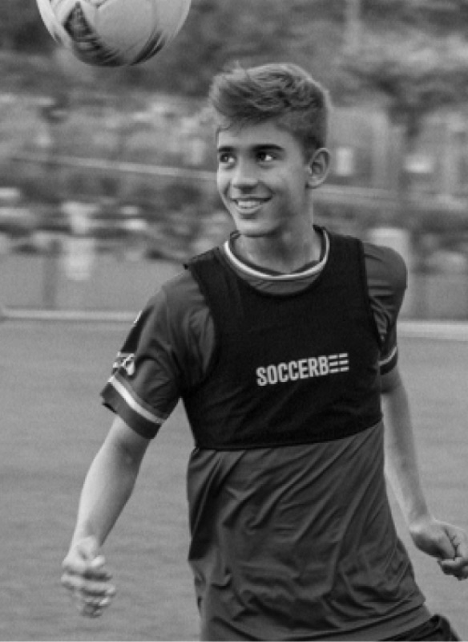
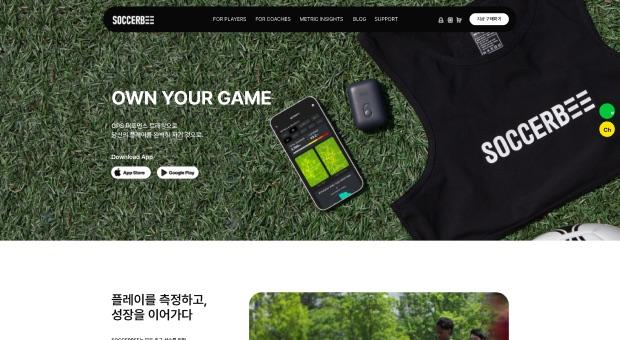
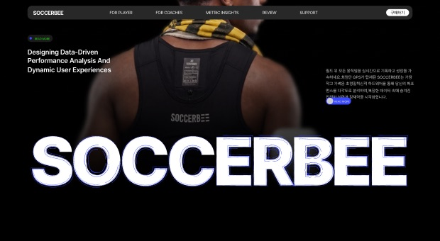
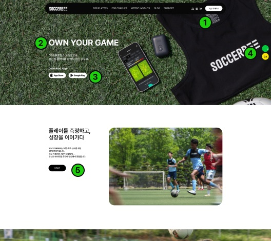
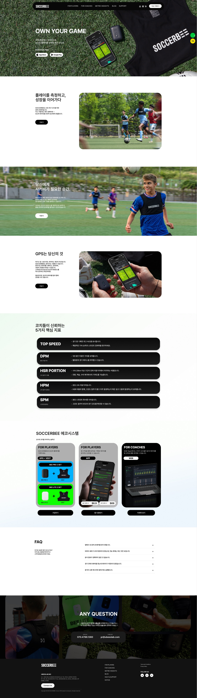
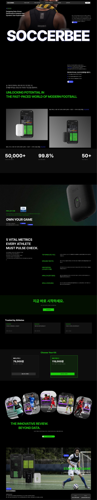

01
타이포 스케일업
- 헤드라인 더 크고 굵게
- Pretendard ExtraBold/Black 적극 사용
- 레퍼런스(Dominic) 수준 화면 압도형
Designing Data-Driven Performance Analysis and Dynamic User Experiences



흑백 단색 → 네온그린 + 다크, 역할별 5색 팔레트
14–36px → 16–80px 스케일 (헤드라인 64px 기준)
아웃라인 · 약 2.8 : 1 → 솔리드 네온그린 · 10.1 : 1
현재 kr v2 디자인은 배경·타이포 전체가 흑/백 모노크롬입니다. 컬러 팔레트(블루·네온그린·퍼플·민트)가 시스템에 정의되어 있으나 실제 UI에 거의 적용되지 않았습니다. 브랜드 키워드 “혁신·강렬·생동감”과 시각적 갭이 큽니다.

| Direction | Background | Accent color | Core feel | Choice |
|---|---|---|---|---|
| ★ A. 네온 + 다크 | 순흑 #000000 | #1CD00B + #3949FF | 혁신 + 강렬 + 생동감 동시 충족 | ✓ Selected |
| B. 딥블루 테크 모노 | 딥네이비 #000D2E | #3949FF + #98FCDF | 혁신 강조, 생동감 약함 | — |
| C. 멀티 그라디언트 | 다크 유지 | 블루 → 퍼플 → 그린 | 생동감 극대, 통제 어려움 | — |
브랜드 키워드 세 가지(혁신·강렬·생동감)를 모두 충족하는 유일한 방향입니다. 순흑 배경에 네온그린 액센트는 스포츠 퍼포먼스 브랜드의 에너지와 FIFA 공식 인증 제품의 신뢰감을 동시에 표현합니다.
기존 사이트는 흰 배경과 흑백 위주라 브랜드 키워드(속도, 데이터, 프로 퍼포먼스)가 색으로 드러나지 않았습니다. 다크 베이스 위에 네온그린 하나를 “행동 색”으로 고정해, 시선이 CTA와 핵심 수치로 모이도록 역할별로 색을 분리했습니다.
페이지 기본 배경. 섹션마다 서피스 단계를 바꿔 깊이를 만들고 네온과의 대비를 최대화합니다.
구매·시작 CTA, 핵심 수치, 섹션 키워드에만 사용하는 행동 색. 다른 용도로 쓰지 않아 눈에 띄는 힘을 유지합니다.
보조 강조(링크·보조 버튼·차트 보조 계열). Primary와 역할이 겹치지 않도록 분리했습니다.
타이틀 일부 키워드 혼합(타이틀 B안), 아이콘, 부가 하이라이트. 네온그린보다 한 단계 약한 포인트.
제목은 100%, 본문은 72% 투명도로 낮춰 다크 배경에서의 눈부심을 줄이고 위계를 만듭니다.
#060606 · 섹션 교차 배경
#0D0D0D · 섹션 교차 배경 2
#111111 · 카드 기본 배경
#282828 · 카드 강조 · 구분
한글은 Pretendard, 영문은 Inter를 사용합니다. 기존 사이트는 14–36px 범위에 머물러 1920px 화면에서 위계가 약했습니다. 헤드라인 64px를 기준(앵커)으로 짝수 스케일 12단계를 새로 정의하고, 최종 디자인(v8)의 텍스트 29개에 같은 규칙으로 일괄 적용했습니다.
| 역할 | Before (KR V2) | After (V8 최종) | 왜 이렇게 바꿨나 |
|---|---|---|---|
| Display / Hero | 36px · Regular · #000 | H1 80px · SemiBold | 첫 화면 메시지가 한눈에 읽히도록 2배 이상 확대 |
| Heading | 24px · Bold / 20px · Medium | H2 64(기준) · H3 52 · H4 46 · H5 40 · SemiBold | 섹션 타이틀을 4단계로 나눠 위계 확보 |
| Subtitle | 정의 없음 | Subtitle1 32 · Subtitle2 28 · SemiBold | 타이틀과 본문 사이를 잇는 단계 신설 |
| Body | 14px · Regular · #333 | Body1 24 · Body2 20 · Body3 18 · Body4 16 · Regular | 1920 캔버스에서 14px는 작아서, 정보 밀도별 4단계로 분리 |
| Button | 정의 없음 | Button 22px · Medium | CTA 크기를 본문보다 한 단계 키워 클릭 대상 강조 |
| Caption / Label | 11px · Regular · #666 | 최소 16px(Body4) · Regular | 작은 글씨를 줄여 가독성 확보, 강조는 색으로 구분 |
전부 짝수이고 서로 다른 값만 사용합니다. 단계가 겹치지 않아 구분이 쉽고, 임의의 크기가 끼어들지 않습니다.
H1~Subtitle2는 SemiBold, Body는 Regular, Button은 Medium으로 고정해 크기와 굵기가 함께 위계를 만듭니다.
브랜드 요소는 스케일 밖으로 유지: 로고(Black 300) · 통계 숫자(ExtraBold 96) · 히어로 카피(ExtraBold 72) · CTA 버튼 3개. 이 포트폴리오의 영문 디스플레이 타이틀(Anton)도 같은 예외입니다.
컴포넌트 3종을 문제 → 변경 → 효과 순서로 정리했습니다. “네온그린 = 행동” 색 규칙과 새 타이포 스케일을 실제 UI에 적용한 사례입니다.
예상 수치를 단정하지 않고, 개선 3가지마다 검증할 가설과 측정 지표를 정리했습니다. 출시 전에 기준값과 성공 기준을 정한 뒤 A/B 테스트로 확인합니다.
전환율·이탈률은 수치를 예측하지 않고 가설과 측정 지표로 제시합니다. 색 대비(10.1 : 1)만 색 값으로 계산한 실측치입니다.
디자인으로 달라진 점을 결과로 정리하고, 과정에서 잘한 점과 아쉬운 점, 배운 점을 남겼습니다.
컬러 5색과 서피스 4단계를 정의하고 모든 섹션에 같은 규칙으로 적용했습니다. 적용되지 않았던 팔레트가 브랜드 키워드(속도 · 데이터)와 UI를 하나로 묶습니다.
다크 테마와 대형 타이포(SOCCERBEE 300px)로 스포츠 테크 프리미엄 브랜드 인상을 화면에서 바로 읽히게 만들었습니다.
통계 수치(50,000+ · 99.8% · 50+)와 5대 핵심 지표에 네온그린 하이라이트를 적용해, 숫자가 가장 먼저 읽히도록 정보 위계를 정리했습니다.
Figma Dev Mode 전환 · 컴포넌트 스펙 문서화 · 토큰 변수 정리
Breakpoint 375 · 768 · 1024px 대응 · 네비게이션 햄버거 처리
히어로 CTA 문구 · 네온그린 vs 화이트 버튼 대비 실험 계획
5명 이상 사용성 테스트 · 태스크 완료율 · 주관적 만족도 측정
이 케이스 스터디는 실제 프로덕션 사이트(kr.soccerbee.me) 기반 리디자인 연구입니다.
Before → After · 기존 메인페이지와 최종 리디자인 전체 화면
기존 디자인 레퍼런스 · 기존 메인페이지

최종 리디자인 결과물 · SOCCERBEE KR

Soccerbee UI Redesign
문건호 · UI Project · 2026